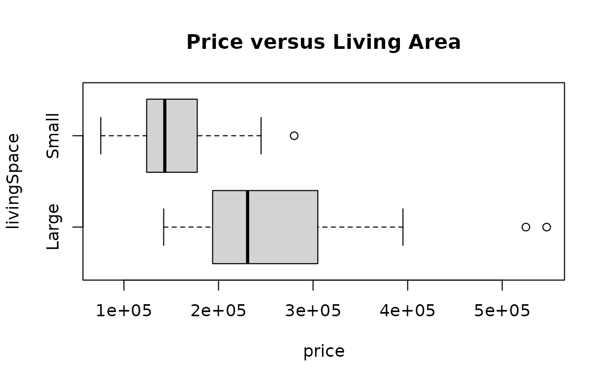
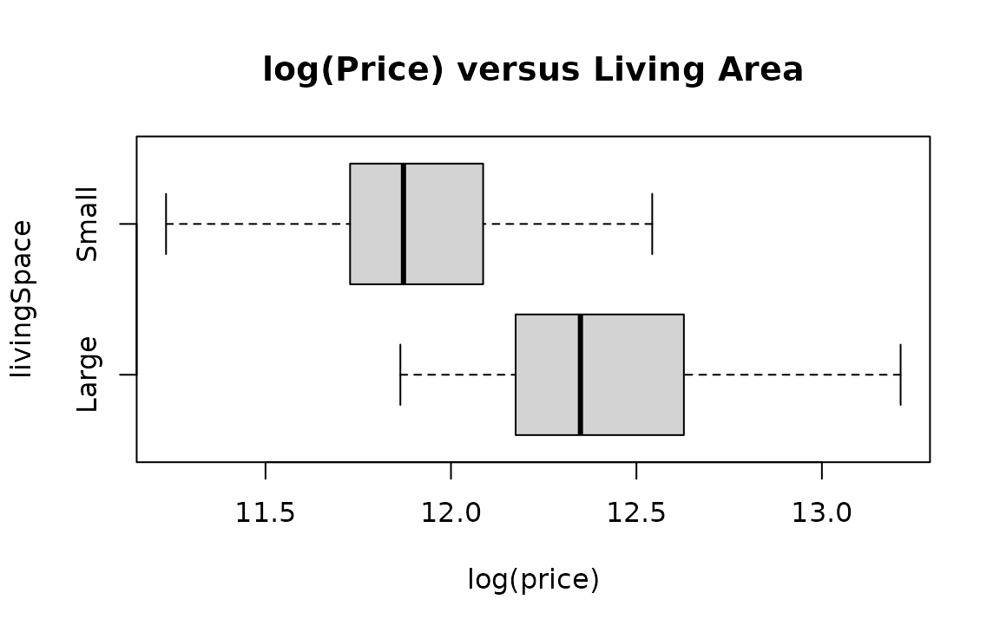
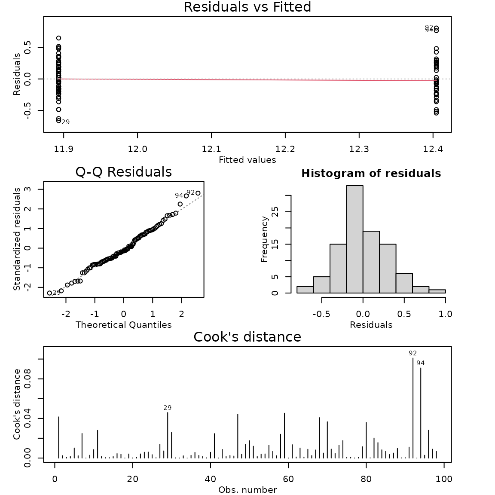

Case Study 5.2: STATS 201/8 Extra Case Study - Two sample, log response
Source:vignettes/articles/CS5_2.Rmd
CS5_2.RmdQuestion 1
A real estate agent in Saratoga, New York, wishes to investigate how the sale price of houses is affected by the size of the house. She has compiled data from a random sample of 112 recent house sales in the city. For this question, we want to compare prices for houses with living areas categorised as small and large and also estimate what the expected house price for these two groups.
The dataset is stored in Houses.csv and includes variables:
| Variable | Description |
|---|---|
| price | sale price of house, in US dollars |
| livingArea | size of the living area of the house, in square metres |
| livingSpace | a factor classifying the size of the living area as either small if less than 170 square metres or large if greater. |
Disclaimer: Before you rush off to Saratoga to buy a house, this is an old dataset. I’m afraid house prices have gone up a lot since this data was collected.
Instructions:
- Comment on the two plots of the data.
- Comment why we log the response variable for this data
- Fit an appropriate model to the data. Check the model assumptions.
- Write appropriate Methods and Assumption Checks.
- Write an appropriate Executive Summary.
Question of interest/goal of the study
We want to compare prices for houses with living areas categorised as small and large and estimate what the expected house price for each group.
Inspect the data: livingSpace as an explanatory variable
houses.df = read.csv("Houses.csv", header = TRUE, stringsAsFactors = TRUE)
plot(price ~ livingSpace, houses.df, main = "Price versus Living Area", horizontal = TRUE)
summaryStats(price ~ livingSpace, houses.df)
plot(log(price) ~ livingSpace, houses.df, main = "log(Price) versus Living Area", horizontal = TRUE)
summaryStats(log(price) ~ livingSpace, houses.df)
## Sample Size Mean Median Std Dev Midspread
## Small 58 151885.4 143200 42683.39 52750
## Large 40 256481.1 230739 89608.55 108625
## Sample Size Mean Median Std Dev Midspread
## Small 58 11.89323 11.87194 0.2770689 0.3541368
## Large 40 12.40448 12.34901 0.3114696 0.4447669Comment on the two plots of the data.
House prices are higher and more varied when there are large living spaces compared to small living spaces. We can see this in the summary statistics as well. After logging the data, the variability in the data is fairly similar for the two groups, with the centre still being higher for the group with larger living spaces.
Comment why we log the response variable for this data
As the variability between the groups is not constant, with the group with the larger centre having more than double the standard deviation of the other group, we need to solve the issue of unequal variability, so logging the data is the best choice.
We also have financial data, and so interpreting the results as percentage changes does make more sense if appropriate.
The data is right skewed, but this is not the major concern for this particular dataset as the skewness isn’t too extreme and we have a sufficiently large sample size for the Central Limit Theorem to come into play.
# Log the response variable and fit the model:
houses.fit1 = lm(log(price) ~ livingSpace, houses.df)
modelcheck(houses.fit1)
summary(houses.fit1)##
## Call:
## lm(formula = log(price) ~ livingSpace, data = houses.df)
##
## Residuals:
## Min 1Q Median 3Q Max
## -0.66134 -0.18691 -0.03943 0.19617 0.80772
##
## Coefficients:
## Estimate Std. Error t value Pr(>|t|)
## (Intercept) 12.40448 0.04610 269.103 < 2e-16 ***
## livingSpaceSmall -0.51125 0.05992 -8.533 2.1e-13 ***
## ---
## Signif. codes: 0 '***' 0.001 '**' 0.01 '*' 0.05 '.' 0.1 ' ' 1
##
## Residual standard error: 0.2915 on 96 degrees of freedom
## Multiple R-squared: 0.4313, Adjusted R-squared: 0.4254
## F-statistic: 72.8 on 1 and 96 DF, p-value: 2.095e-13
confint(houses.fit1)## 2.5 % 97.5 %
## (Intercept) 12.3129825 12.4959806
## livingSpaceSmall -0.6301905 -0.3923172## 2.5 % 97.5 %
## (Intercept) 2.225668e+05 2.672609e+05
## livingSpaceSmall 5.324904e-01 6.754898e-01## 2.5 % 97.5 %
## 0.5324904 0.6754898## 2.5 % 97.5 %
## -46.75096 -32.45102
# % Change CI for opposite direction (Large - Small), so negative confidence interval before back transform
100 * (exp(-confint(houses.fit1)[2, ]) - 1)## 2.5 % 97.5 %
## 87.79683 48.04073
# Rotate factor to get intercept to give estimates when area = small
houses.df = within(houses.df, {
livingSpaceR = factor(livingSpace, levels = c("Small", "Large"))
})
houses.fit2 = lm(log(price) ~ livingSpaceR, houses.df)
summary(houses.fit2)##
## Call:
## lm(formula = log(price) ~ livingSpaceR, data = houses.df)
##
## Residuals:
## Min 1Q Median 3Q Max
## -0.66134 -0.18691 -0.03943 0.19617 0.80772
##
## Coefficients:
## Estimate Std. Error t value Pr(>|t|)
## (Intercept) 11.89323 0.03828 310.688 < 2e-16 ***
## livingSpaceRLarge 0.51125 0.05992 8.533 2.1e-13 ***
## ---
## Signif. codes: 0 '***' 0.001 '**' 0.01 '*' 0.05 '.' 0.1 ' ' 1
##
## Residual standard error: 0.2915 on 96 degrees of freedom
## Multiple R-squared: 0.4313, Adjusted R-squared: 0.4254
## F-statistic: 72.8 on 1 and 96 DF, p-value: 2.095e-13
confint(houses.fit2)## 2.5 % 97.5 %
## (Intercept) 11.8172419 11.9692135
## livingSpaceRLarge 0.3923172 0.6301905## 2.5 % 97.5 %
## (Intercept) 1.355698e+05 1.578205e+05
## livingSpaceRLarge 1.480407e+00 1.877968e+00Method and Assumption Checks
We have a single grouping explanatory variable with two levels, so have fitted a linear model with a single dummy variable to the data. Due to the large differences in variability between the two groups,
After logging price, the residuals looked much better. Normality looks good and no influential points were detected. We have a random sample, so the independence assumption is satisfied. Model assumptions are satisfied.
Our model is:
where if the th house has a small living area and is 0 otherwise, and
Alternatively, our model is: where is the mean log price if the house has a small living space and is the mean log price if the house has a large living space.,
Our model explained 43.1% of the variation in the data.
Executive Summary.
We investigated how the prices of houses in Saratoga, New York, are affected by house size.
We found strong evidence that the median house price is greater in houses with larger living area (greater than 170 square metres) than those with smaller living areas..
We estimate that the median house price for houses with small living areas (less than 170 square metres) was between 32.5% and 46.8% smaller than that than for houses with large living area.
Alternatively: We estimate that the median house price for houses with large living areas (greater than 170 square metres) was between 48.0% and 87.8% more than that than for houses with small living area.
We estimate that the median house price for:
- houses with a small living areas is between $136,000 and $158,000.
- houses with a large living areas is between $223,000 and $267,000.